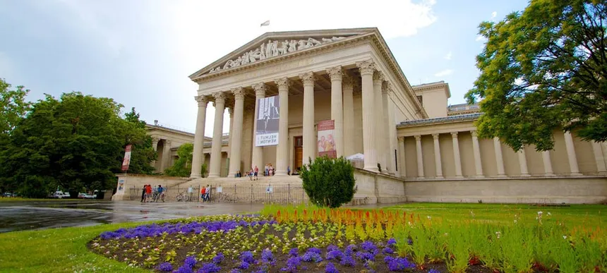

Budapest: Un tesoro cultural en museos
Budapest alberga una impresionante variedad de museos que reflejan su rica historia, arte y cultura. Uno de los más emblemáticos es el Museo Nacional de Hungría (Magyar Nemzeti Múzeum), ubicado en un majestuoso edificio neoclásico en el distrito VIII. Este museo narra la historia del país desde la prehistoria hasta la era moderna, destacando la Corona de San Esteban y exposiciones sobre la Revolución Húngara de 1956. Su escalinata frontal fue escenario clave durante las protestas de 1848, añadiendo un valor histórico adicional.
En el Castillo de Buda, la Galería Nacional Húngara (Magyar Nemzeti Galéria) ofrece un recorrido por el arte húngaro desde la Edad Media hasta el siglo XX. Sus salas exhiben obras maestras de artistas como Mihály Munkácsy, así como esculturas góticas y retablos medievales. Muy cerca, el Museo de Historia de Budapest (Budapesti Történeti Múzeum) complementa la visita con maquetas del castillo en su época medieval y objetos que revelan la evolución de la ciudad, incluyendo su pasado romano.
Para los amantes del arte internacional, el Museo de Bellas Artes (Szépművészeti Múzeum) es parada obligada. Situado junto a la Plaza de los Héroes, alberga obras de Rafael, Rembrandt y Goya, además de una notable colección de antigüedades egipcias. En contraste, el Museo de Artes Aplicadas (Iparművészeti Múzeum) sorprende con su arquitectura art nouveau y exhibiciones de cerámica, mobiliario y diseño, mostrando la creatividad húngara en las artes decorativas.
Uno de los museos más conmovedores es la Casa del Terror (Terror Háza), en la avenida Andrássy. Este edificio, que fue sede de la policía secreta durante los regímenes nazi y comunista, utiliza instalaciones interactivas para narrar las víctimas de la represión. No lejos de allí, el Museo Judío (Zsidó Múzeum), anexo a la Gran Sinagoga de Budapest, preserva la memoria de la comunidad judía húngara, con objetos rituales y un emotivo memorial del Holocausto.
Para explorar el pasado romano de la ciudad, el Museo Aquincum exhibe ruinas y artefactos de la antigua ciudad de Aquincum, incluyendo mosaicos y un órgano acuático reconstruido. En un tono más oscuro pero igualmente fascinante, el Museo Hospital en la Roca (Sziklakórház) muestra un hospital secreto usado durante la Segunda Guerra Mundial y la Revolución de 1956, con equipos médicos originales y escenas reconstruidas con figuras de cera.
- Museo Nacional de Hungría (Magyar Nemzeti Múzeum)
- Temática: Historia de Hungría
- Galería Nacional Húngara (Magyar Nemzeti Galéria)
- Ubicada en el Castillo de Buda, arte húngaro desde la Edad Media
- Museo de Bellas Artes (Szépművészeti Múzeum)
- Arte europeo (desde la antigüedad hasta el siglo XX)
- Museo de Artes Aplicadas (Iparművészeti Múzeum)
- Diseño, artes decorativas y arquitectura
- Museo de Historia de Budapest (Budapesti Történeti Múzeum)
- Historia de la ciudad (en el Castillo de Buda)
- Casa del Terror (Terror Háza)
- Exhibición sobre los regímenes fascista y comunista en Hungría
- Museo Judío de Budapest (Zsidó Múzeum)
- Historia y cultura judía en Hungría
- Museo de la Música (Zene Háza - Magyar Zenei Múzeum)
- Instrumentos musicales y compositores húngaros
- Museo de Ciencias Naturales de Hungría (Magyar Természettudományi Múzeum)
- Geología, paleontología y biología
- Museo de Arte Contemporáneo (Ludwig Múzeum)
- Arte moderno y contemporáneo internacional